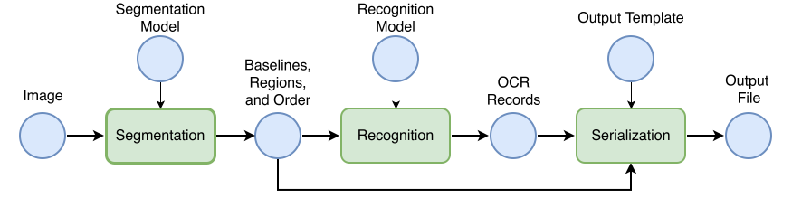
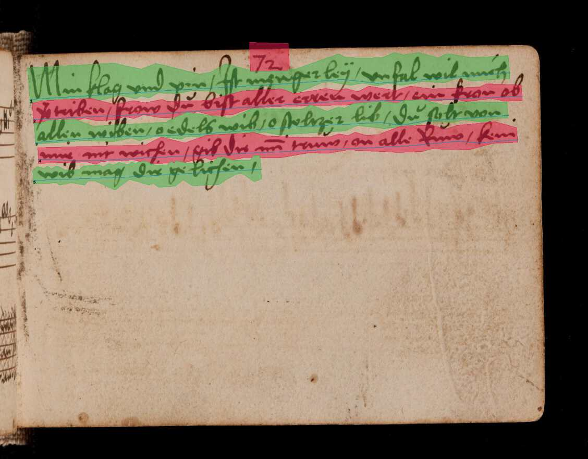

Introduction to Automatic Text Recognition¶
Welcome to kraken! If you are coming from the humanities, archiving, or library sciences, you might be looking for a way to turn your images of historical documents into searchable, analyzable digital text.
This guide introduces the core concepts of automatic text recognition (ATR) and machine learning as they apply to kraken. We have avoided jargon where possible to help you understand what happens “under the hood” without needing a background in computer science.
The ATR Pipeline: From Image to Text¶
Automatic text recognition is not a single magical step. It is a pipeline, a series of distinct tasks that must happen in a specific order. You can think of it like an assembly line where the image is the raw material and the digital text is the final product.

Step 1: Layout Analysis and Reading Order¶
Before a computer can read text, it must find where the text is located and determine the order in which it should be read. This stage is often called segmentation. The software analyzes the page image to identify the structure, finding text regions (such as paragraphs, marginalia, or headers) and, most importantly, baselines (the imaginary line on which text sits).

Simultaneously, the software must determine the reading order. Historical documents often have complex layouts with multiple columns, side notes, or drop caps. If the computer does not calculate the correct sequence, for example, reading down the left column before starting the right column, the final output will be a jumbled “word salad” of disconnected sentences. The result of this step isn’t text yet; it is a map of the page containing coordinates for every line and the sequence in which they should be processed.
Step 2: Line Text Recognition¶

Once the lines are found and ordered, kraken “cuts” them out and feeds them into the recognizer one by one. The engine looks at the image of a single line and predicts the sequence of characters (letters, numbers, punctuation) that best matches the visual patterns it sees. The output of this stage is a string of raw text for each line.
Step 3: Serialization (Output Formats)¶
Finally, the text needs to be saved. A simple text file is often not enough because it loses the information about where the text was located on the page. Instead, kraken uses specialized XML formats common in the digital humanities, such as PageXML or ALTO. These formats act like a container that holds both the text content and the layout coordinates together. This is crucial because it allows you to view the text overlaid on the original image in viewing software, preserving the link between the visual document and the digital data.
Machine Learning Concepts in kraken¶
kraken is a machine learning system. Unlike traditional software that follows a strict set of programmed rules, kraken “learns” by example.
What is a Model?¶
Think of a model as a “skill” or a “lens” that kraken wears. You generally deal with two types of models. A segmentation model has the skill of seeing layout, such as distinguishing a paragraph from an illustration. A recognition model has the skill of reading a specific script or typeface, such as 17th-century French cursive. You must load the correct model for your specific documents. If you use a model trained on modern English to read medieval Latin, it will fail, just as an untrained human reader would.
Training vs. Fine-Tuning¶
Models acquire these skills through a process called training. Training from scratch is necessary when there is no existing model that is fairly close to what you want to achieve, e.g., if you are working with the Malayalam script and no model exists for it. The difficulty of this task depends entirely on your goals.
If you only need to recognize a specific manuscript written in a clean, uniform hand with a small alphabetic script, training a model from scratch can be surprisingly fast, often requiring only a couple of dozen pages of training data.
However, if you want to build a generalized model, a model capable of reading a wide variety of documents from different hands or time periods within a specific scribal culture, the requirements are much higher. This requires a careful evaluation of the textual features you want to cover and at least tens of thousands of examples to ensure the model learns to generalize across different writing styles.
In many cases, users can rely on fine-tuning. This is like taking a literate adult and teaching them to read a specific messy handwriting. You take an existing model that already knows the basics (e.g., the Latin alphabet) and show it a small number of examples from your specific documents. It updates its knowledge to specialize in your material, which is much faster than training a generalized model from scratch.
What is Training Data?¶
To teach kraken, both from scratch and fine-tuning, you need to provide training data, often called ground truth. This is essentially the answer key. For layout training, you provide images alongside the correct “map” of lines and regions. For text recognition training, you provide images of text lines alongside the exact digital transcription of what those lines say.
However, simply providing correct data is not enough; the data must also be digestible for the machine. While human readers can navigate complex nuances easily, machine learning models perform best when tasks are clear and distinct. For example, a layout analysis scheme with a hundred different classes that require extensive contextual knowledge will require a vast amount of training data to learn effectively and may still yield poor results. Similarly, very intricate transcription norms can be difficult for the model to reproduce. In general, it is often better to simplify your requirements to match the capabilities of the technology, using fewer, broader layout categories and standardizing transcription rules will usually result in much higher accuracy than a highly complex system.
To assist with this, the HTR-United initiative accumulates training datasets for a variety of historical material that you can use for training or as examples for your own data management.
While primarily intended as a schema for creating ATR transcription norms for training generalized recognition models, this article explains the general considerations in-depth.
Crucially, this training data is usually stored in the same formats as the output: PageXML or ALTO. The following simplified snippet of an ALTO file illustrates how layout coordinates (the baseline and polygon shape) and the transcription content are stored together:
<TextLine ID="line_1" BASELINE="50 100 450 105">
<Shape>
<Polygon POINTS="50,100 450,105 450,140 50,135"/>
</Shape>
<String CONTENT="Example of ground truth text." WC="1.0"/>
</TextLine>
This means you can generate some initial output with kraken, correct it manually using a transcription tool to create perfect ground truth files, and then feed those corrected XML files back into kraken to improve segmentation and recognition models. If your training data has errors, such as typos in your transcription, kraken will learn those errors, so high-quality ground truth is the most critical factor for good results.